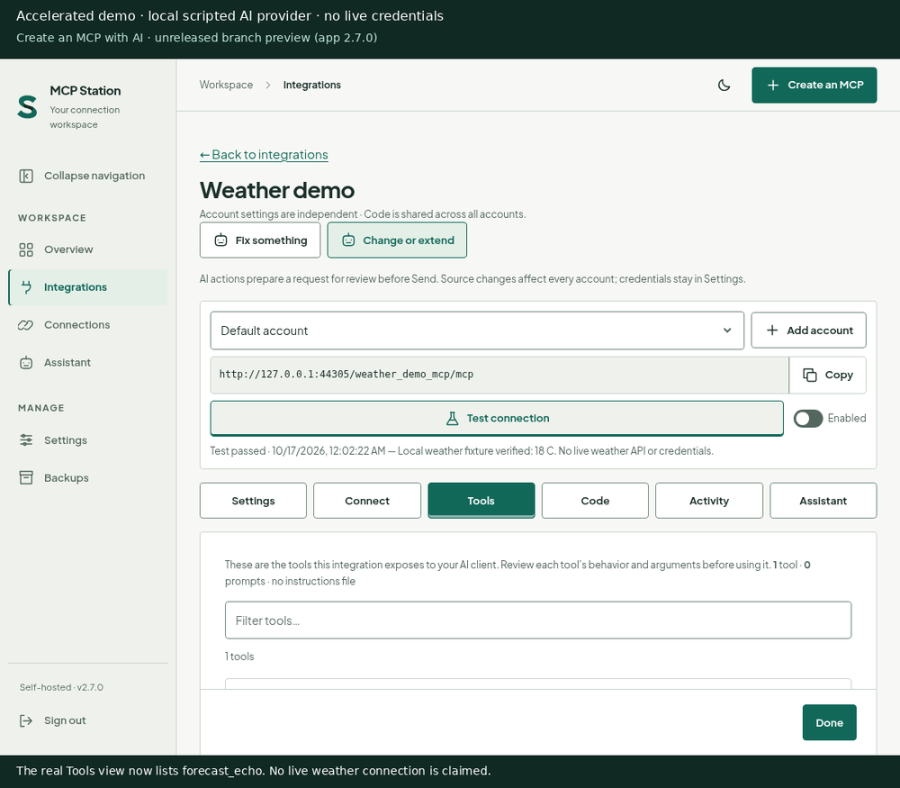
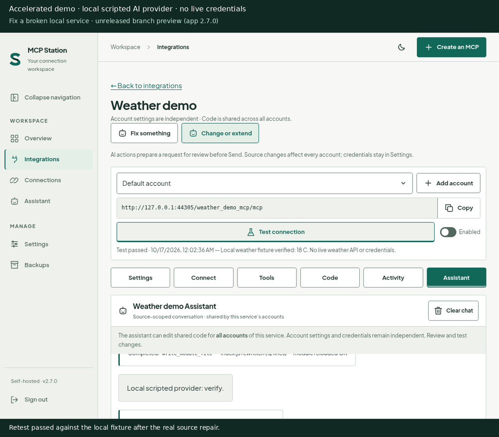
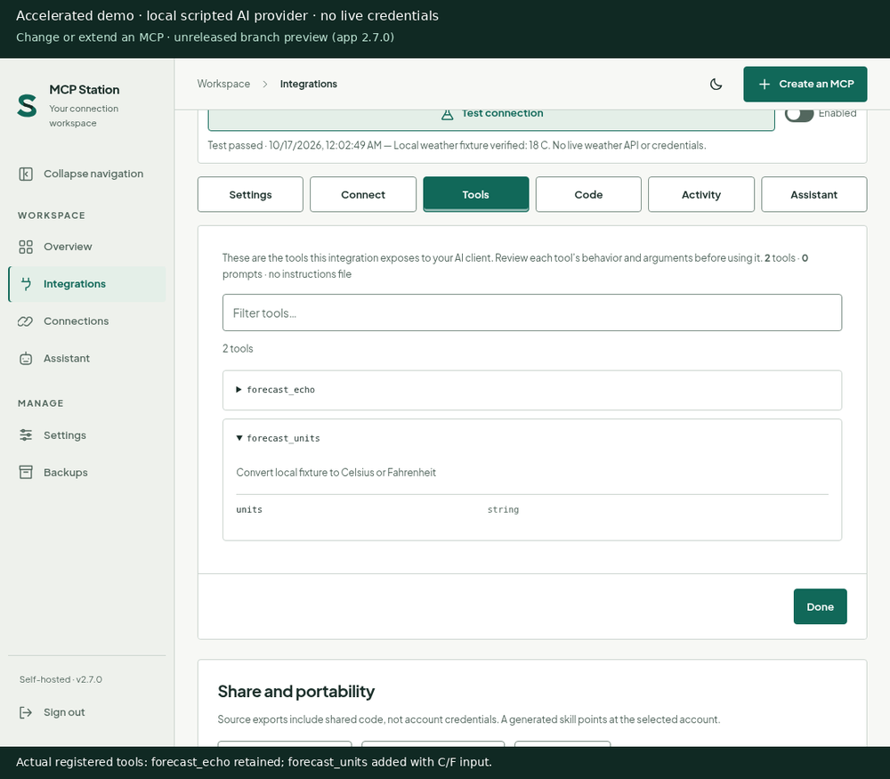

An assistant, with a place to work.
Use the dedicated Assistant or a source-scoped conversation to develop integrations. Bring API documentation, review generated code, and test before enabling.
How the Assistant worksSelf-hosted MCP tools AI-first update · in review
Create, repair and extend MCP integrations with your Assistant.
Describe a service and the tools you need. Let your Assistant build, repair or extend its integration, then review, configure and test before connecting compatible local or cloud MCP clients.
The Create flow and same-tab sessions shown here are unreleased. Released 2.7.0 does not include them; its 18 bundled modules and existing Assistant remain available.
Connect through an MCP-capable client
Use compatible MCP connection features where available. ChatGPT custom MCP access and actions depend on plan, workspace permissions and supported connection options; Claude requires an available custom connector; LibreChat requires MCP server configuration. Each client must support the station’s transport and authentication, and be able to reach its endpoint. Local models require an MCP-capable client to call tools.
Client names describe connection options, not endorsements or certification. Live end-to-end compatibility has not been verified for every client and tool.
Useful tools, from the start
Read and send email. Work with files and repositories. Manage infrastructure, tasks and alerts—using the tools and permissions each integration exposes.
Included in 2.7.0 stable. The release bundles 18 service modules, including eight additions: Gmail, Google Drive, GitHub, Docker Hub, Todoist, Pushover, Proton Pass and Cloudflare. Credentials and service permissions are required; bundled does not mean connected or live-tested. A fresh install seeds all 18; missing folders are added on startup, while existing module folders are never overwritten.
For another service, you need a usable API or a purpose-built adapter, authentication and permission to perform each action. This is not universal website automation. Review generated adapters before running them.
A clearer working surface
Choose an account. Check its settings and tools. Connect when you’re ready.

The in-review workflow
Nothing goes to your provider until you review the draft and press Send.
Choose Create an MCP. Enter a service goal and name, with an optional public documentation URL. Keep credentials out of these inputs.
Continue to Assistant creates a disabled starter and editable draft, with no AI request or provider bill. Send starts generation through existing documentation and source-writing tools.
Review source and Tools. Add credentials in Settings, run Test connection, then enable and Connect. A load-only test is not proof of upstream access; verify a read-only client call.
Fix / Modify without auto-send. Visible module actions Fix something and Change or extend prefill a source-scoped draft for review. Shared source edits affect all accounts; generated code is executable, not sandboxed.
Chats continue across route navigation in the same tab. Stop or successful logout cancels active work; reload or tab close ends requests. Network loss or browser sleep may interrupt them. These are not durable jobs; stopping does not undo completed writes.
Real app · scripted provider
Three 12-second demonstrations of the in-review flow. Static posters and written steps work without playback or JavaScript.
Every poster and frame is labeled “Accelerated demo · local scripted AI provider · no live credentials”. Reduced motion starts static too; Play is always an explicit choice.



A station to work from
Less switching between configuration, source code, and conversation. More context for the next useful step.
Use the dedicated Assistant or a source-scoped conversation to develop integrations. Bring API documentation, review generated code, and test before enabling.
How the Assistant worksSee calls, errors, and latency from completed authenticated tool calls. Bounded operational metadata—not invented activity, full audit logs, or provider cost tracking.
What usage measuresSelf-host with Docker and persistent storage. Install the web app where your browser supports it over HTTPS. It’s a PWA, not a native desktop app or offline access to private content.
Plan your setupControl starts with clarity
Keep the station on infrastructure you control. Be deliberate about the code you run and the context you share.
Read the account boundariesStart with 2.7.0 stable
Pull MCP Station 2.7.0 stable, then follow the full guide for credentials, persistent storage, and networking. A pull downloads the image; it does not start the station.
Open the full installation guidedocker pull dbzocchi/mcp-station:2.7.0Persist /data and /app/mcps, plus /files when used. Before upgrading, back up and validate in an isolated instance with separate volumes.
2.7.0 stable: pin 2.7.0 for this release. Moving 2.7 and latest follow stable updates. All 18 modules are bundled; configure credentials and permissions before connecting. Multi-account means service configurations under one administrator—not multi-user hosting.